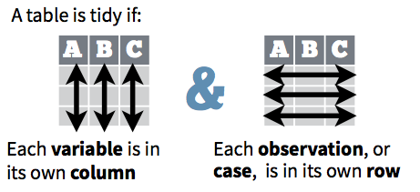
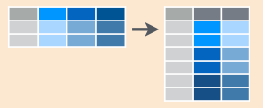
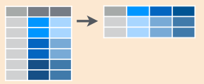
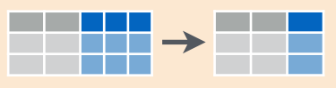
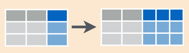

6.3 Limpieza y reestructura

La mayor parte de las bases de datos en estadística tienen forma rectangular por lo que únicamente se trataran este tipo de estructura de datos.
Una base de datos es una colección de valores numéricos o categóricos con tres características:
Cada valor pertenece a una variable y a una observación.
Una variable contiene los valores del atributo (genero, fabricante, ingreso) de la variable por unidad.
- Una observación contiene todos los valores medidos por la misma unidad (personas, día, autos, municipios) para diferentes atributos.
6.3.1 Principios de datos limpios
Los principios de datos limpios Tidy Data de Hadley Wickham proveen una manera estándar de organizar la información:
- Cada variable forma una columna.
- Cada observación forma un renglón.
- Cada tipo de unidad observacional forma una tabla.

Ejemplos
Supongamos un experimento con 3 pacientes cada uno tiene resultados de dos tratamientos (A y B):
| tratamientoA | tratamientoB | |
|---|---|---|
| Juan Aguirre | - | 2 |
| Ana Bernal | 16 | 11 |
| José López | 3 | 1 |
La tabla anterior también se puede estructurar de la siguiente manera:
| Juan Aguirre | Ana Bernal | José López | |
|---|---|---|---|
| tratamientoA | - | 16 | 3 |
| tratamientoB | 2 | 11 | 1 |
Entonces, siguiendo los principios de datos limpios obtenemos la siguiente estructura:
| nombre | tratamiento | resultado |
|---|---|---|
| Juan Aguirre | a | - |
| Ana Bernal | a | 16 |
| José López | a | 3 |
| Juan Aguirre | b | 2 |
| Ana Bernal | b | 11 |
| José López | b | 1 |
6.3.2 Problemas más comunes
Algunos de los problemas más comunes en las bases de datos que no están limpias son:
- Los encabezados de las columnas son valores y no nombres de variables.
- Más de una variable por columna.
- Las variables están organizadas tanto en filas como en columnas.
- Más de un tipo de observación en una tabla.
- Una misma unidad observacional está almacenada en múltiples tablas.
6.3.3 Funciones de reestructura
Existe cuatro funciones principales para la manipulación de los datos.
Funciones principales:
gather()spread()unite()separate()
Para entender los conceptos se presentan varios ejemplos usando la base de datos siguiente.
df.ejem <- data_frame(
mes = c("1_ene", "2_feb", "3_mar", "4_abr", "5_may"),
`2005`= c(8.6, 9.1, 8.7, 8.4, 8.5),
`2006`= c(8.5, 8.5, 9.1, 8.6, 7.9),
`2007`= c(9.0, 10.7, 20.0, 21, 16.2))
df.ejem## # A tibble: 5 x 4
## mes `2005` `2006` `2007`
## <chr> <dbl> <dbl> <dbl>
## 1 1_ene 8.6 8.5 9.0
## 2 2_feb 9.1 8.5 10.7
## 3 3_mar 8.7 9.1 20.0
## 4 4_abr 8.4 8.6 21.0
## 5 5_may 8.5 7.9 16.2gather(): junta columnas en renglones.
También se le conoce como melt o derretir la base. Recibe múltiples columnas y las junta en pares de nombres y valores, convierte los datos anchos en largos.

tidyr::gather(data, key = name_variablelabel, value = name_valuelabel, select_columns)
df.ejem.long <- df.ejem %>%
gather(key = year, value = tasa, `2005`:`2007`)
# vemos las primeras líneas de nuestros datos alargados
df.ejem.long %>% head## # A tibble: 6 x 3
## mes year tasa
## <chr> <chr> <dbl>
## 1 1_ene 2005 8.6
## 2 2_feb 2005 9.1
## 3 3_mar 2005 8.7
## 4 4_abr 2005 8.4
## 5 5_may 2005 8.5
## 6 1_ene 2006 8.5spread(): separa renglones en columnas.
Recibe dos columnas y las separa, haciendo los datos más anchos.

tidyr::spread(data, key = name_variablelabel, value = name_valuelabel)
df.ejem.spread <- df.ejem.long %>%
tidyr::spread(mes, tasa)
df.ejem.spread %>% head## # A tibble: 3 x 6
## year `1_ene` `2_feb` `3_mar` `4_abr` `5_may`
## <chr> <dbl> <dbl> <dbl> <dbl> <dbl>
## 1 2005 8.6 9.1 8.7 8.4 8.5
## 2 2006 8.5 8.5 9.1 8.6 7.9
## 3 2007 9.0 10.7 20.0 21.0 16.2unite(): une varias columnas en una sola.

tidyr::unite(data, col = name_variabletoadd, c(columns to unite), sep)
df.ejem.unite <- df.ejem.long %>%
unite(col = month_year, c(mes, year), sep = "_")
df.ejem.unite %>% head## # A tibble: 6 x 2
## month_year tasa
## <chr> <dbl>
## 1 1_ene_2005 8.6
## 2 2_feb_2005 9.1
## 3 3_mar_2005 8.7
## 4 4_abr_2005 8.4
## 5 5_may_2005 8.5
## 6 1_ene_2006 8.5separate(): separa una columna en varias columnas.

tidyr::separate(data, col = name_variabletoseparate, into = c(vector with names using ""), sep)
df.ejem.separate <- df.ejem.unite %>%
separate(col = month_year, c('mes.num', 'mes', 'year'), sep = "_")
df.ejem.separate %>% head## # A tibble: 6 x 4
## mes.num mes year tasa
## <chr> <chr> <chr> <dbl>
## 1 1 ene 2005 8.6
## 2 2 feb 2005 9.1
## 3 3 mar 2005 8.7
## 4 4 abr 2005 8.4
## 5 5 may 2005 8.5
## 6 1 ene 2006 8.5Otras funciones útiles:
arrange(): ordena un dataframe de acuerdo a variables específicas.rename(): permite renombrar variables.select(): selecciona variables.